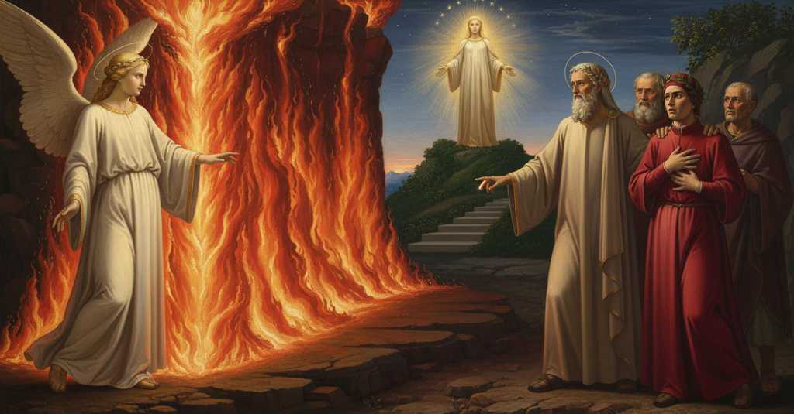

Purgatorio — Canto 27

Dante attraversa con Virgilio e Stazio la fiamma che lo separa da Beatrice, sogna Lia e Rachele, e, giunto al Paradiso terrestre, riceve da Virgilio il riconoscimento della piena libertà del proprio arbitrio. Dante crosses with Virgil and Statius the flame that separates him from Beatrice, dreams of Leah and Rachel, and, having reached the Earthly Paradise, receives from Virgil recognition of the full freedom of his own will. ダンテはウェルギリウスとスタティウスとともにベアトリーチェから彼を隔てる炎を通り抜け、リアとラケルの夢を見て、地上楽園に着くと、ウェルギリウスから自らの意志の完全な自由を認められる。
1
Sì come quando i primi raggi vibra
Just as when the first rays vibrate
最初の光が放たれる時のように
2
là dove il suo fattor lo sangue sparse,
there where its maker shed his blood,
その創り主が血を流された場所で、
3
cadendo Ibero sotto l’alta Libra,
with Ibero falling beneath the high Libra,
イベロ川が高き天秤座の下に沈み、
4
e l’onde in Gange da nona rïarse,
and the waves in the Ganges scorched by noon,
ガンジス川の波が九時に熱せられる時、
5
sì stava il sole; onde ’l giorno sen giva,
so stood the sun; hence the day was departing,
そのように太陽は立っていた。ゆえに日は去り行き、
6
come l’angel di Dio lieto ci apparse.
when the angel of God appeared to us, joyful.
神の御使いが喜ばしげに我らに現れた。
7
Fuor de la fiamma stava in su la riva,
Outside the flame he stood upon the bank,
炎の外、岸辺に立っており、
8
e cantava ‘Beati mundo corde!’
and sang ‘Beati mundo corde!’
そして歌っていた、「心清き者は幸いなり！」と
9
in voce assai più che la nostra viva.
in a voice much more alive than ours.
我らの声より遥かに生き生きとした声で。
10
Poscia «Più non si va, se pria non morde,
Then: “One does not go further, if first it does not bite,
次いで、「まず噛みつかねば、先へは進めぬ、
11
anime sante, il foco: intrate in esso,
holy souls, the fire: enter into it,
聖なる魂よ、この炎を。その中に入れ、
12
e al cantar di là non siate sorde»,
and to the singing on the other side be not deaf,”
そして向こうの歌に耳を塞ぐな」と、
13
ci disse come noi li fummo presso;
he said to us as we drew near him;
我らが彼に近づくと、彼は我らに言った。
14
per ch’io divenni tal, quando lo ’ntesi,
for which I became such, when I heard it,
それを聞いた時、私はこのようになった、
15
qual è colui che ne la fossa è messo.
as is he who is put into the grave.
墓穴に下ろされる者のように。
16
In su le man commesse mi protesi,
Upon my clasped hands I stretched myself forward,
組んだ手を前に差し出し、
17
guardando il foco e imaginando forte
looking at the fire and imagining intensely
炎を見つめ、そして強く想像した
18
umani corpi già veduti accesi.
human bodies I had already seen burning.
かつて見た、燃やされる人間の体を。
19
Volsersi verso me le buone scorte;
My good escorts turned toward me;
善き案内人たちは私の方を向いた。
20
e Virgilio mi disse: «Figliuol mio,
and Virgil said to me: “My son,
そしてウェルギリウスは私に言った、「我が子よ、
21
qui può esser tormento, ma non morte.
here there can be torment, but not death.
ここには苦しみはあろうが、死はない。
22
Ricorditi, ricorditi! E se io
Remember, remember! And if I
思い出せ、思い出すのだ！そしてもし私が
23
sovresso Gerïon ti guidai salvo,
over Geryon guided you safely,
ゲリュオンの上でもお前を無事に導いたのなら、
24
che farò ora presso più a Dio?
what shall I do now, nearer to God?
今、より神に近いここで、何をしようというのか？
25
Credi per certo che se dentro a l’alvo
Believe for certain that if within the belly
確かに信じよ、もしこの胎の内に
26
di questa fiamma stessi ben mille anni,
of this flame you were to stay a full thousand years,
この炎の中に千年留まろうとも、
27
non ti potrebbe far d’un capel calvo.
it could not make you bald of a single hair.
お前の髪一本たりとも禿げさせることはできぬ。
28
E se tu forse credi ch’io t’inganni,
And if you perhaps believe that I deceive you,
そしてもしお前が、私が欺くと信じるなら、
29
fatti ver’ lei, e fatti far credenza
go toward it, and get proof for yourself
それに近づき、そして信じさせてみよ
30
con le tue mani al lembo d’i tuoi panni.
with your own hands on the hem of your clothes.
そなたの手で、そなたの衣の裾を。
31
Pon giù omai, pon giù ogne temenza;
Put down now, put down all fear;
もはや捨てよ、一切の恐れを捨てよ。
32
volgiti in qua e vieni: entra sicuro!».
turn this way and come: enter securely!”.
こちらへ向き、来るのだ。安心して入れ！」。
33
E io pur fermo e contra coscïenza.
And I still firm and against my conscience.
それでも私は動かず、良心に背いていた。
34
Quando mi vide star pur fermo e duro,
When he saw me stand still firm and hard,
私がなおも動かず、頑なであるのを見て、
35
turbato un poco disse: «Or vedi, figlio:
a little troubled he said: “Now see, son:
少し心を乱して言った、「さて見よ、息子よ、
36
tra Bëatrice e te è questo muro».
between Beatrice and you is this wall.”
ベアトリーチェとお前の間には、この壁があるのだ」。
37
Come al nome di Tisbe aperse il ciglio
As at the name of Thisbe, Pyramus opened
ティスベの名にピュラモスが死の床で
38
Piramo in su la morte, e riguardolla,
his eyes at the point of death, and looked at her,
瞼を開き、彼女を見つめたように、
39
allor che ’l gelso diventò vermiglio;
at the time when the mulberry became vermilion;
その時、桑の実は赤く染まった。
40
così, la mia durezza fatta solla,
so, my hardness made pliant,
そのように、私の頑なさは和らぎ、
41
mi volsi al savio duca, udendo il nome
I turned to the wise duke, hearing the name
私は賢き導き手の方を向いた、その名を聞いて
42
che ne la mente sempre mi rampolla.
that in my mind always sprouts.
私の心に常に芽生えるその名を。
43
Ond’ ei crollò la fronte e disse: «Come!
Whereat he shook his head and said: “What!
すると彼は額を揺すって言った、「なんと！
44
volenci star di qua?»; indi sorrise
Do we want to stay on this side?”; then he smiled
こちら側に留まりたいのか？」と。それから微笑んだ
45
come al fanciul si fa ch’è vinto al pome.
as one does at a child who is won by an apple.
林檎に負かされた子供にするように。
46
Poi dentro al foco innanzi mi si mise,
Then into the fire he put himself before me,
それから炎の中へ、私の前に身を置き、
47
pregando Stazio che venisse retro,
asking Statius to come behind,
スタティウスには後に続くよう頼んだ、
48
che pria per lunga strada ci divise.
who before had separated us for a long road.
以前は長い道で我らを隔てていた彼に。
49
Sì com’ fui dentro, in un bogliente vetro
As soon as I was inside, into boiling glass
中に入るとすぐに、沸騰したガラスの中にでも
50
gittato mi sarei per rinfrescarmi,
I would have thrown myself to cool down,
身を投じて涼みたくなるほどだった、
51
tant’ era ivi lo ’ncendio sanza metro.
so immeasurable was the fire there.
そこでは炎が計り知れないほどだったから。
52
Lo dolce padre mio, per confortarmi,
My sweet father, to comfort me,
我が優しき父は、私を慰めるために、
53
pur di Beatrice ragionando andava,
kept speaking only of Beatrice,
ひたすらベアトリーチェのことを語り続け、
54
dicendo: «Li occhi suoi già veder parmi».
saying: “I seem to see her eyes already.”
言った、「彼女の瞳がもう見えるようだ」。
55
Guidavaci una voce che cantava
A voice that was singing guided us
歌う声が我らを導いた
56
di là; e noi, attenti pur a lei,
from the other side; and we, attentive only to it,
向こうから。そして我らは、ひたすらその声に注意を払い、
57
venimmo fuor là ove si montava.
came out to where the ascent began.
登るべき場所へと外に出た。
58
‘Venite, benedicti Patris mei’,
‘Come, you blessed of my Father’,
「来たれ、我が父に祝福されし者らよ」、
59
sonò dentro a un lume che lì era,
sounded from within a light that was there,
そこにあった光の中から響いた、
60
tal che mi vinse e guardar nol potei.
such that it overcame me and I could not look at it.
それは私を圧倒し、見ることができなかった。
61
«Lo sol sen va», soggiunse, «e vien la sera;
“The sun is departing,” it added, “and evening comes;
「太陽は去り」と付け加えた、「そして夜が来る。
62
non v’arrestate, ma studiate il passo,
do not stop, but hasten your steps,
立ち止まるな、しかし歩みを早めよ、
63
mentre che l’occidente non si annera».
while the west does not yet blacken.”
西の空が黒くならぬうちに」。
64
Dritta salia la via per entro ’l sasso
The path ascended straight through the rock
道は岩の中をまっすぐに登っていた
65
verso tal parte ch’io toglieva i raggi
in such a direction that I blocked the rays
私が光線を遮るような方角へ
66
dinanzi a me del sol ch’era già basso.
of the already low sun before me.
私の前で、すでに低い太陽の光を。
67
E di pochi scaglion levammo i saggi,
And we had made trial of only a few steps,
そしてわずかな段を我らは試したところで、
68
che ’l sol corcar, per l’ombra che si spense,
when we felt the sun set behind us, I and my sages,
影が消えたことによって太陽が沈んだのを、
69
sentimmo dietro e io e li miei saggi.
by the shadow that vanished.
私と我が賢者たちは背後に感じた。
70
E pria che ’n tutte le sue parti immense
And before the horizon in all its immense parts
そして、その広大な全域において
71
fosse orizzonte fatto d’uno aspetto,
had become of a single appearance,
地平線が一つの様相を呈し、
72
e notte avesse tutte sue dispense,
and night had assumed all its domains,
夜がそのすべての務めを果たす前に、
73
ciascun di noi d’un grado fece letto;
each of us made a bed of a step;
我らはそれぞれ一段を寝床とした。
74
ché la natura del monte ci affranse
for the nature of the mountain took from us
というのも、山の定めが我らから打ち砕いたからだ
75
la possa del salir più e ’l diletto.
the power to climb further, and the desire.
さらに登る力と喜びを。
76
Quali si stanno ruminando manse
As the goats,
反芻しながら静かにしている
77
le capre, state rapide e proterve
having been swift and bold
山羊たちのように、かつては素早く大胆だったが
78
sovra le cime avante che sien pranse,
on the peaks before they are fed,
餌を食む前には山頂の上で、
79
tacite a l’ombra, mentre che ’l sol ferve,
now stand quiet, chewing their cud in the shade, while the sun burns hot,
影の中で黙して、太陽が照りつける間は、
80
guardate dal pastor, che ’n su la verga
watched by the shepherd, who on his staff
牧人に守られ、彼は杖の上に
81
poggiato s’è e lor di posa serve;
has leaned and serves them as their guard of rest;
もたれかかり、彼女たちの休息を見守る。
82
e quale il mandrïan che fori alberga,
and as the herdsman who lodges outdoors,
そして野宿する牛飼いのように、
83
lungo il pecuglio suo queto pernotta,
spends the night alongside his quiet flock,
静かな家畜の群れのそばで夜を明かし、
84
guardando perché fiera non lo sperga;
watching so that a wild beast does not scatter it;
獣がそれを散らさぬよう見張っている。
85
tali eravamo tutti e tre allotta,
such were all three of us then,
そのようなのが、その時の我ら三人だった、
86
io come capra, ed ei come pastori,
I like a goat, and they like shepherds,
私は山羊のように、そして彼らは牧人のように、
87
fasciati quinci e quindi d’alta grotta.
enclosed on this side and that by the high rock-face.
こちらとあちらを高い岩壁に囲まれて。
88
Poco parer potea lì del di fori;
Little of the outside could appear there;
そこからは外の世界はほとんど見えなかった。
89
ma, per quel poco, vedea io le stelle
but, through that little, I saw the stars
しかし、そのわずかな隙間から、私は星々が見えた
90
di lor solere e più chiare e maggiori.
brighter and larger than their usual.
いつもよりも、より明るく、より大きく。
91
Sì ruminando e sì mirando in quelle,
Thus ruminating and thus gazing at them,
そうして思いに耽り、そうして星々を見つめていると、
92
mi prese il sonno; il sonno che sovente,
sleep took me; the sleep that often,
眠りが私を捉えた。その眠りはしばしば、
93
anzi che ’l fatto sia, sa le novelle.
before the event happens, knows the news.
事が起こる前に、知らせを知っている。
94
Ne l’ora, credo, che de l’orïente
At the hour, I believe, when from the east
思うに、東の方から
95
prima raggiò nel monte Citerea,
first Venus beamed upon the mountain,
キテレアが最初に山に輝きを放ち、
96
che di foco d’amor par sempre ardente,
who seems always to burn with the fire of love,
常に愛の炎で燃えているように見える、その時刻に、
97
giovane e bella in sogno mi parea
young and beautiful in a dream it seemed to me
夢の中で、若く美しい婦人が
98
donna vedere andar per una landa
I saw a lady going through a meadow,
野辺を行くのが見えたように思えた。
99
cogliendo fiori; e cantando dicea:
gathering flowers; and singing she was saying:
彼女は花を摘み、歌いながらこう言った。
100
«Sappia qualunque il mio nome dimanda
"Let whoever asks my name know
「私の名を尋ねる者は誰であれ知りなさい、
101
ch’i’ mi son Lia, e vo movendo intorno
that I am Leah, and I go moving around
私がリアであり、こうして周りで
102
le belle mani a farmi una ghirlanda.
my beautiful hands to make myself a garland.
美しい手を動かして、花輪を作っていることを。
103
Per piacermi a lo specchio, qui m’addorno;
To please myself at the mirror, here I adorn myself;
鏡に映る自分を喜ばせるため、ここで私は身を飾るのです。
104
ma mia suora Rachel mai non si smaga
but my sister Rachel never moves away
しかし、姉のラケルは決して鏡から離れず、
105
dal suo miraglio, e siede tutto giorno.
from her mirror, and sits all day.
一日中座っています。
106
Ell’ è d’i suoi belli occhi veder vaga
She is eager to see her beautiful eyes
彼女はその美しい瞳で見つめることを愛し、
107
com’ io de l’addornarmi con le mani;
as I am to adorn myself with my hands;
私は手で身を飾ることを愛します。
108
lei lo vedere, e me l’ovrare appaga».
her, seeing, and me, doing, satisfies."
彼女は見ることに、私は働くことに満足するのです」。
109
E già per li splendori antelucani,
And now because of the pre-dawn splendors,
そしてすでに、夜明け前の輝きによって、
110
che tanto a’ pellegrin surgon più grati,
which to pilgrims arise all the more welcome
その輝きは巡礼者にとって、帰路につき宿が近くなるほど、
111
quanto, tornando, albergan men lontani,
as, returning, they lodge less far away,
ますます喜ばしく昇るのだが、
112
le tenebre fuggian da tutti lati,
the shadows were fleeing on all sides,
闇は四方から逃げ去り、
113
e ’l sonno mio con esse; ond’ io leva’mi,
and my sleep with them; so I rose up,
それと共に私の眠りも去った。そこで私は起き上がった、
114
veggendo i gran maestri già levati.
seeing the great masters already risen.
偉大なる師たちがすでに起きているのを見て。
115
«Quel dolce pome che per tanti rami
“That sweet apple which on so many branches
「あの甘い果実を、数多の枝々を通して
116
cercando va la cura de’ mortali,
the care of mortals goes in search of,
死すべき者らの懸命さが探し求める、
117
oggi porrà in pace le tue fami».
today will set your hungers at peace.”
今日こそがお前の渇望を鎮めるだろう」。
118
Virgilio inverso me queste cotali
Virgil toward me these such
ウェルギリウスは私に向かってそのような
119
parole usò; e mai non furo strenne
words used; and never were there gifts
言葉を使い、かつていかなる贈り物も
120
che fosser di piacere a queste iguali.
that were of a pleasure equal to these.
これに等しい喜びをもたらしたものはなかった。
121
Tanto voler sopra voler mi venne
Such will upon will came to me
それほどに望みの上に望みが私に湧き起こり
122
de l’esser sù, ch’ad ogne passo poi
to be up above, that at every step then
上へ行きたいと、その後のどの歩みでも
123
al volo mi sentia crescer le penne.
I felt my feathers for flight grow.
飛翔のために我が身に翼が生えるのを感じた。
124
Come la scala tutta sotto noi
When the whole stairway beneath us
階段がすべて我々の下に
125
fu corsa e fummo in su ’l grado superno,
was run and we were on the highest step,
走り去られ、我々が最上段に着くと、
126
in me ficcò Virgilio li occhi suoi,
Virgil fixed his eyes upon me,
私にウェルギリウスはその眼差しを据え、
127
e disse: «Il temporal foco e l’etterno
and said: “The temporal fire and the eternal
言った、「束の間の火と永遠の火とを
128
veduto hai, figlio; e se’ venuto in parte
you have seen, son; and you have come to a place
お前は見たのだ、息子よ。そしてお前は、私が自力では
129
dov’ io per me più oltre non discerno.
where I by myself discern no further.
これ以上先を見通せぬ場所へと来た。
130
Tratto t’ho qui con ingegno e con arte;
I have brought you here with intellect and with art;
私は知性と術とをもってお前をここまで導いた。
131
lo tuo piacere omai prendi per duce;
your own pleasure now take as your guide;
今後はお前の喜びを導き手とせよ。
132
fuor se’ de l’erte vie, fuor se’ de l’arte.
you are out of the steep ways, out of the narrow.
お前は険しい道から、狭い道から抜け出たのだ。
133
Vedi lo sol che ’n fronte ti riluce;
See the sun that shines on your brow;
見よ、お前の額に輝く太陽を。
134
vedi l’erbette, i fiori e li arbuscelli
see the little grasses, the flowers and the small trees
見よ、小草を、花々を、そして灌木を、
135
che qui la terra sol da sé produce.
that here the earth by itself alone produces.
ここでは大地がただ自ずから生み出すものを。
136
Mentre che vegnan lieti li occhi belli
While the happy, beautiful eyes come
あの美しい瞳が喜びに満ちて来る間、
137
che, lagrimando, a te venir mi fenno,
that, weeping, made me come to you,
涙ながらに、お前の元へ私を来させたあの瞳が、
138
seder ti puoi e puoi andar tra elli.
you can sit and you can go among them.
お前は座ることも、彼らの間を歩くこともできる。
139
Non aspettar mio dir più né mio cenno;
Await my word no longer, nor my sign;
もはや私の言葉も合図も待つな。
140
libero, dritto e sano è tuo arbitrio,
free, upright and whole is your will,
自由で、正しく、健やかである、お前の意志は。
141
e fallo fora non fare a suo senno:
and it would be a fault not to act on its judgment:
そして、その意のままに行わぬは過ちとなろう。
142
per ch’io te sovra te corono e mitrio».
for which I, over you, crown and miter you.”
ゆえに私はお前の上にお前を、王冠と司教冠で飾る」。